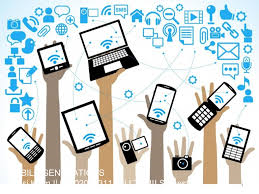
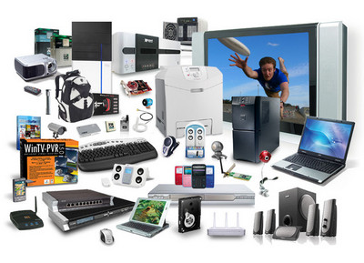

Mobile computing is a technology that enables data, voice , and video to be transmitted through a computer or any other wireless device without having to be linked to a fixed physical link. The principal concept is
the mobile contact refers to the network that has been set up to ensure smooth and efficient communication continues. These would include the devices necessary to facilitate and support the services, such as protocols, services, bandwidth and portals. At this stage , the data format is defined too. This ensures that there is no collision with other existing systems offering the same service. The overlaying infrastructure is basically radio wave-oriented, since the media is unguided / unbounded. That is to say, the signals are transported over the air to intended devices capable of receiving and transmitting similar signals. .
Mobile software is the actual program that runs on the mobile hardware. It deals with the functionality and specifications of mobile devices. This is the Mobile Device Engine. In other words, it is the Appliance's operating system. It is the essential component that operates the mobile device. Because portability is the main factor, this type of computing ensures that users are not attached to a single physical location, but are able to operate from anywhere. It embodies all aspects of wireless communication
Mobile hardware includes components for mobile devices or devices which receive or access mobility service. They will range from laptops , smartphones, tablet computers, personal digital assistants. Such instruments should have a medium with a receptor capable of detecting and receiving signals. These devices are configured to operate in full duplex, thus being able to simultaneously send and receive signals. They don't have to wait until one device communicates to the other device to start communications .
